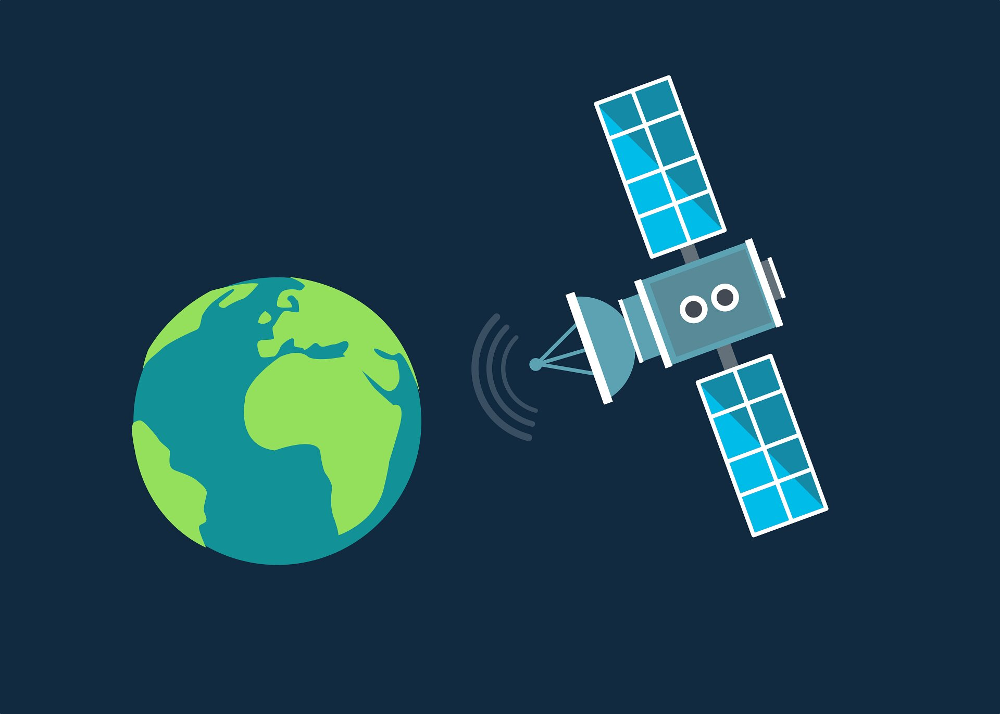

Physics
Trigonometry helps in understanding wave patterns, oscillations, and forces acting at different angles.

Engineering
Engineers use trigonometry to design structures, analyze forces, and calculate angles for construction projects.

Astronomy
Astronomers use trigonometry to calculate distances between celestial objects and understand the movements of planets and stars.
Navigation
Trigonometry is essential for navigation, helping sailors and pilots to chart courses and find their way using angles and distances.